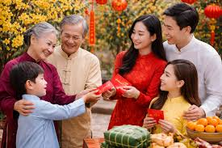

👨👩👧👦 Chúc Tết và Đi Thăm Họ Hàng
Thứ Tự Chúc Tết
Chúc Tết và đi thăm họ hàng là phong tục quan trọng trong những ngày đầu năm mới.
Việc này thể hiện tình cảm gia đình, sự kính trọng và mong muốn gắn kết các thế hệ.
Thứ Tự Chúc Tết Theo Truyền Thống
📅 Mùng 1 Tết - Chúc Tết Nội:
Ngày đầu tiên của năm mới, con cháu thường:
- Chúc Tết ông bà, cha mẹ trong nhà
- Đi thăm ông bà nội, bố mẹ chồng/vợ
- Chúc Tết anh chị em trong gia đình
- Ở lại nhà nội để sum họp, ăn uống cùng nhau
📅 Mùng 2 Tết - Chúc Tết Ngoại:
Ngày thứ hai, con cháu đi thăm nhà ngoại:
- Chúc Tết ông bà ngoại
- Thăm cô, dì, chú, bác bên ngoại
- Gặp gỡ anh chị em họ bên ngoại
📅 Mùng 3 Tết - Thăm Họ Hàng Xa:
Ngày thứ ba, có thể đi thăm:
- Họ hàng xa, bạn bè thân thiết
- Thầy cô giáo cũ
- Đồng nghiệp, bạn bè
- Hàng xóm láng giềng
Nguyên Tắc Chúc Tết
- Kính trên nhường dưới: Chúc người lớn tuổi trước, sau đó mới đến người trẻ
- Thứ tự thân thiết: Chúc người thân nhất trước (ông bà, cha mẹ)
- Lễ phép: Luôn giữ thái độ kính trọng, lễ phép
- Thành tâm: Lời chúc phải xuất phát từ tấm lòng chân thành
Cách Ứng Xử Ngày Tết
1. Lời Chúc Tết
Lời chúc Tết nên phù hợp với từng đối tượng và tình huống:
Chúc Ông Bà, Cha Mẹ:
- "Con chúc ông bà năm mới sức khỏe dồi dào, sống lâu trăm tuổi!"
- "Con chúc bố mẹ năm mới an khang thịnh vượng, vạn sự như ý!"
- "Cháu chúc ông bà năm mới vui vẻ, hạnh phúc, trường thọ!"
Chúc Anh Chị Em:
- "Chúc anh/chị năm mới công việc suôn sẻ, thăng tiến!"
- "Chúc em năm mới học hành tấn tới, đạt nhiều thành tích!"
- "Chúc cả nhà năm mới đoàn kết, hạnh phúc!"
Chúc Họ Hàng, Bạn Bè:
- "Chúc gia đình năm mới an khang thịnh vượng, tài lộc dồi dào!"
- "Chúc mừng năm mới! Vạn sự như ý, phát tài phát lộc!"
- "Chúc năm mới sức khỏe, hạnh phúc, thành công!"
2. Cách Chào Hỏi
- Khi vào nhà: Chào hỏi lễ phép, không đi thẳng vào mà đợi được mời
- Xưng hô đúng: Gọi đúng vai vế, không gọi tên trực tiếp với người lớn
- Thái độ: Vui vẻ, thân thiện, nhưng vẫn giữ sự tôn trọng
- Ngôn ngữ cơ thể: Cúi đầu nhẹ khi chúc, mỉm cười thân thiện
3. Quà Tặng Khi Đi Thăm
Khi đi thăm họ hàng, thường mang theo quà:
- Bánh kẹo, mứt Tết: Các loại bánh kẹo truyền thống
- Trái cây: Ngũ quả, trái cây tươi
- Rượu, trà: Rượu ngon, trà thơm
- Hoa: Hoa tươi, chậu hoa
- Quà đặc sản: Đặc sản địa phương
Lưu ý: Quà không cần quá đắt tiền, quan trọng là tấm lòng.
Tránh tặng quà có ý nghĩa không may mắn (như số 4, màu trắng, đen).
4. Ứng Xử Trong Nhà Người Khác
- Lễ phép: Chào hỏi đầy đủ, xưng hô đúng
- Ngồi đúng chỗ: Đợi được mời ngồi, không tự ý ngồi
- Trò chuyện: Nói chuyện vui vẻ, tích cực, tránh chủ đề nhạy cảm
- Ăn uống: Khi được mời, nên nhận lời, không từ chối ngay
- Thời gian: Không ở quá lâu, biết khi nào nên ra về
5. Những Điều Nên Tránh
- Không nói điều không may: Tránh nói về bệnh tật, tai nạn, chuyện buồn
- Không cãi nhau: Giữ hòa khí, tránh tranh luận, cãi vã
- Không đến quá sớm hoặc quá muộn: Đến đúng giờ hẹn
- Không đến tay không: Nên mang quà, dù nhỏ
- Không ở quá lâu: Biết thời điểm ra về phù hợp
- Không hỏi chuyện riêng tư: Tránh hỏi về công việc, thu nhập, chuyện tình cảm
Ý Nghĩa Văn Hóa
Phong tục chúc Tết và đi thăm họ hàng có ý nghĩa sâu sắc:
- Gắn kết gia đình: Duy trì mối quan hệ giữa các thế hệ
- Giáo dục đạo đức: Dạy con cháu về lòng kính trọng, hiếu thảo
- Gìn giữ truyền thống: Bảo tồn văn hóa gia đình qua nhiều thế hệ
- Tạo không khí vui vẻ: Mang lại niềm vui, sự ấm cúng trong dịp Tết
- Thể hiện tình cảm: Bày tỏ tình yêu thương, quan tâm đến người thân
Chúc Tết Hiện Đại
Ngày nay, với sự phát triển của công nghệ, việc chúc Tết có thêm nhiều hình thức:
- Chúc Tết qua điện thoại: Gọi điện chúc Tết người thân ở xa
- Chúc Tết qua tin nhắn: Gửi tin nhắn chúc Tết
- Chúc Tết qua video call: Gọi video để gặp mặt trực tuyến
- Chúc Tết trên mạng xã hội: Đăng bài, gửi lời chúc công khai
Tuy nhiên, việc đến thăm trực tiếp vẫn là quan trọng và ý nghĩa nhất,
thể hiện sự tôn trọng và tình cảm chân thành.

👨👩👧👦 Gia Đình
Chúc Tết trong gia đình
🏠 Họ Hàng
Đi thăm họ hàng ngày Tết
🎁 Quà Tết
Quà biếu ngày Tết
Lưu Ý Quan Trọng
- Chúc Tết là hoạt động tự nguyện, không nên ép buộc
- Quan trọng là tấm lòng, không phải giá trị vật chất
- Giữ thái độ tích cực, vui vẻ trong suốt dịp Tết
- Dạy trẻ em cách chúc Tết và ứng xử lễ phép
- Gìn giữ và phát huy phong tục tốt đẹp này